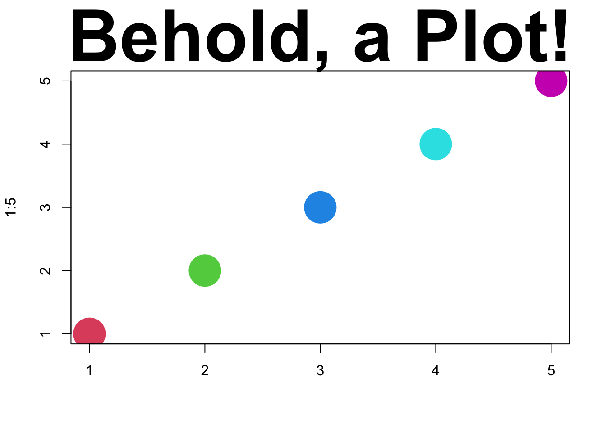

plot(1:5, main="Behold, a Plot!", col=2:6, cex=5,
pch=16, xlab="", cex.main=5)
Michael Weylandt
Today: 2025-02-06
Final enrollment: 28
Course project draft description is now online
Detailed discussion of:
Will be finalized next week - 2025-02-13.
Please send me questions in advance!
First step: by 2025-03-05, email me your group members.
No GTA this semester.
Instructor Tip: Before committing a team with someone, you can look up their GitHub and see how they did on MP#00 and MP#01. This might be helpful to find teammates whose standards are calibrated to your own.
Special thanks to JLL for finding and reporting issues with MP#00 instructions
Pre-Assignment 02:
. . .
Pre-Assignment 03:
Verification of Enrollment - Required to stay enrolled in class
R and RStudioWhat is Markdown?
Per Wikipedia: “Markdown is a light-weight, plain-text, markup language specification”
What is Markdown?
Other than text formatting, does Markdown ha[ve] any other us[]es?
On its own, Markdown is just text formatting (but that’s a lot!)
. . .
We will use Quarto which augments markdown for reproducible research. We can embed code-and its output-inside Markdown documents.
[W]hat documents use[] Markdown?
So much! Markdown is used by Bitbucket, GitHub, OpenStreetMap, Reddit, Stack Exchange, Drupal, ChatGPT, Discord, MS Teams and many more!
. . .
With tools like Pandoc/Quarto, Markdown can be rendered to:
[What is] the difference between [a] Code section and [a] Nested List[? A]re they just different ways of indenting?
No. Nested lists are ‘just’ text
Code formatting enables much more if rendering engine supports it:
. . .
[H]ow are we going to use Markdown?
All written work (mini-projects and final project) in this course will be submitted using Markdown (by way of Quarto).
. . .
Specifically:
You are also encouraged (but not required) to use Markdown for presentation slides (like these!)
How can I create Tables in Markdown?
Markdown has two table syntaxes:
If you are making complex tables, I recommend using the list-table extension.
(See syllabus.qmd in course repo for examples.)
How to create images and links?
Basic hyperlinks look like this:
[link text](https://the.url/goes/here). . .
If you want to embed the contents of a link, prepend it with an exclamation point. This is most useful for images:
. . .
You can even put a link inside an image to be fancy:
[](https://en.wikipedia.org/wiki/Elephant)How to create images and links?
Quarto automatically embeds the results of plotting code:
Here, Quarto handles all the file creation and link targeting for us. If I change the code, the figure will change automatically.
R REPL and RStudioR REPLOfficial Cheat Sheets:
Data Camp RStudio Tutorial (Free)
Quarto user guide is fantastic!
See also source for course materials.
If you haven’t already, install Quarto.
Create a simple PDF quarto document using the RStudio wizard.
(Note that you may need to install tinytex for this to work properly, but Quarto should install it for you automatically.)
Create a 5 slide presentation showing the Houston housing market. This should include:
You may use the following code snippets:
if(!require("tidyverse")) install.packages("tidyverse")
library(tidyverse)
txhousing |> filter(city=="Houston") |>
group_by(year) |>
summarize(sales=sum(sales)) |>
ggplot(aes(x=year, y=sales)) +
geom_line() +
ggtitle("Annual Houses Sold in Houston, TX")Recall that this code needs to be between three backticks on each end (and start with r in curly braces as well.)
if(!require("tidyverse")) install.packages("tidyverse")
library(tidyverse)
txhousing |> filter(city=="Houston") |>
group_by(month) |>
summarize(avg_price=sum(volume) / sum(sales)) |>
mutate(month=factor(month.abb[month],
levels=month.abb, ordered=TRUE)) |>
ggplot(aes(x=month, y=avg_price)) +
geom_bar(stat="identity") +
ggtitle("Average Price of Houses Sold in Texas by Month") +
xlab("Month") +
ylab("Average Sale Price") +
scale_y_continuous(labels = scales::dollar)Recall that this code needs to be between three backticks on each end (and start with r in curly braces as well.)
if(!require("tidyverse")) install.packages("tidyverse")
library(tidyverse)
txhousing |> filter(year==2015) |>
group_by(city) |>
summarize(avg_price=sum(volume) / sum(sales),
num_sales=sum(sales)) |>
slice_max(num_sales, n=10) |>
ggplot(aes(x=city, y=avg_price)) +
geom_bar(stat="identity") +
ggtitle("Average Price of Houses Sold in 2015 by City in Texas") +
xlab("City") +
ylab("Average Sale Price") +
scale_y_continuous(labels = scales::dollar)Recall that this code needs to be between three backticks on each end (and start with r in curly braces as well.)
View the Quarto Demo Slides and add one new element to your slides from the previous section.
In-class discussion of what a static web page is and the role of GitHub Pages as a static web server.
Professional programming is at least half looking things up; at beginning stages, the fraction is even higher.
So it’s important to know how to see help the smart way:
R and its packages are no exception. Everything we will use in this class has solid documentation.Most programming challenges have been faced by somebody before, so Google it!
Tips:
R or rstats in your search queryStackOverflow for specific code questions; blogs and course materials are better for “big picture” questionsProgramming fora, like StackOverflow, are full of great resources. Most of what you need is already there. But if you need to ask a new question, make sure to create a minimal reproducible example
Make it easy for your helper to help you.
Pro-Tip: You’ll solve over 50% of your problems in trying to create an MRE.
Tips:
The reprex R package helps with this: see this talk.
For this class, rely on Piazza!
Course Project:
It’s time to start preparing your taxes. (I know, I know …)
. . .
. . .
If your income is less than ~$98K single or ~$113K married, the IRS FreeFile program means you can use TaxAct, etc. for free.1